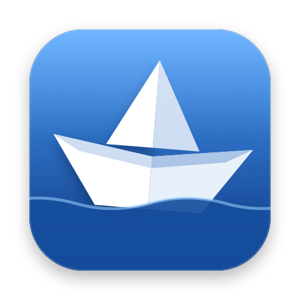

インストーラーは、会社の Dropbox の共有フォルダ「Ferry」の中にあります。
Dropbox\…\Ferry\App\Windows を開き、FerryApp-win-Setup.exe をダブルクリックします。最初に 1 回だけ、会社の共有フォルダと、会社のパスワードを使えるようにします。
左のサイドバーの上に「会社の共有」の接続先が並べば完了です。
App や servers フォルダではなく、その一つ上の「Ferry」フォルダを選んでください。
会社の接続先のパスワードは、会社のマスターパスワードで暗号化して共有しています。会社のマスターパスワードは、管理する人から聞いてください。
これで、会社の接続先はパスワードを入れずにつながります。入力は PC ごとに 1 回だけです。
| 場所 | できること |
|---|---|
| サイドバー | 接続先を選ぶとつながります。フォルダの見出しを押すと開閉します。検索欄で名前・ホスト・ユーザー名・フォルダ名から探せます（空白で区切ると「かつ」。Enter で最初の結果を開く）。 |
| 左右のペイン | 左が自分の PC、右がサーバー。上のパンくず（C: › Users › …）で上の階層へ戻れます。列の見出し（名前・サイズ・更新日）を押すと並べ替え。間の境界線をドラッグで幅を変え、ダブルクリックで半分ずつに戻ります。 |
| 左下 | 小さな雲のアイコン（自分の接続先を同期中。フォルダで同期しているときは同期のアイコン）と人のアイコン（会社の共有）。マウスを乗せると詳しい状態、押すと設定が開きます。黄色のときはマスターパスワードの入力が必要です。 |
| キー | 動き | キー | 動き |
|---|---|---|---|
| Enter | 開く（フォルダ・ファイル） | Space | プレビューの開閉 |
| Delete | 削除 | F2 | 名前を変更 |
| F5 | 再読み込み | Backspace / Alt+← | 前のフォルダへ戻る |
| Alt+↑ | 上のフォルダへ | Ctrl / Shift+クリック | 複数を選ぶ |
前回開いていた接続先は、次に Ferry を起動したときに自動で開きます。
共用サーバーなどで、証明書の名前が接続先と合わないときに出ます。接続先に間違いがなければ 証明書を検証せずに接続 を押してください（通信の暗号化はそのままです）。一度押すと次からは出ません。
右のペインに理由が出ます（「ログインできませんでした」「サーバーが見つかりません」「データ接続ができませんでした」など）。再試行 か 接続設定 から直してください。10 章もあわせて見てください。
| やりたいこと | 方法 |
|---|---|
| アップロード | 左（この PC）から右（サーバー）へドラッグ。エクスプローラーから右へドラッグしても OK。 または左で選んでツールバーの アップロード、右クリックの アップロード。 |
| ダウンロード | 右から左へドラッグ。右からエクスプローラーへドラッグしても OK。 サーバーのファイルをダブルクリック、ツールバーの ダウンロード、右クリックの ダウンロード。 |
| フォルダごと | フォルダを選べば中身ごと転送します（.git や node_modules など、設定の「除外」にあるものは中身からは除きます）。 |
アップロード先・ダウンロード先は、反対側のペインで今開いているフォルダです。
まとめて 1 回だけ聞かれます。
| 選択肢 | 動き |
|---|---|
| 新しい場合のみ上書き | 転送元の方が新しいファイルだけ上書き（ふだんはこれ） |
| すべて上書き | 同じ名前のファイルはすべて上書き |
| 既存のファイルはスキップ | すでにあるファイルは転送しない |
| 転送をやめる | 何も転送しない |
転送中は画面の下に一覧が出ます。✕ で中止、↻ で再試行、完了した項目を消去 で一覧を片付けます。全部終わると Windows の通知でお知らせします（設定の「通知」で切れます）。
名前を変更… パーミッション…（サーバー側。755 などの数字） パスをコピー 削除 新規フォルダ… エクスプローラーで表示（この PC 側）
ファイルを選んで Space。画像・テキスト・HTML・PDF をその場で見られます。開いたまま ↑↓ で次のファイル、もう一度 Space で閉じます。サーバーのファイルも見られます（50MB まで）。
サーバーのファイルを右クリック → エディタで開く。VS Code（入っていれば）で開き、保存するたびにサーバーへアップロードします。編集中のファイルはツールバーの 編集中 から、もう一度開く・監視をやめる、ができます。使うエディタは設定の「エディタ」で変えられます。
「この PC のフォルダ」と「サーバーのフォルダ」の組み合わせを覚えておけます。開きたい場所を左右で開いて、ツールバーの ブックマーク → 今の左右の場所を追加…。次からはブックマークを選ぶだけで両方がその場所を開きます。接続時に開く にすると、つないだときに自動で開きます。
FileZilla や WinSCP を使っていた人は、＋ → FileZilla から読み込む… / WinSCP から読み込む… でまとめて取り込めます。
自分だけの接続先（会社の共有ではないもの）は、置き場所を選ぶと、自分の他の PC（Mac 版の Ferry も）と同じ一覧になります。
| 保存場所 | 向いている人 |
|---|---|
| iCloud Drive | Mac も使っていて、Windows 用 iCloud を入れている人（入っていればこれが最初の設定） |
| 選んだフォルダ | 自分だけの Dropbox・OneDrive などのフォルダで同期したい人（会社の共有フォルダとは別のフォルダを選んでください） |
| この PC だけ | 同期しなくてよい人 |
新しい場所にまだ一覧が無ければ、今の一覧をコピーします。すでにあれば（2 台目の PC など）その一覧を使います。
設定の パスワード → 「自分の PC の間で同期」で自分用のマスターパスワードを決めて 同期を始める。他の PC では同じマスターパスワードを入れて 同期する。
Ferry は起動するたびに、会社の共有フォルダ（Ferry\App\Windows）に新しいバージョンがあるかを確かめ、裏でダウンロードします。
| こんなとき | 確かめること |
|---|---|
| 会社の接続先でパスワードを聞かれる | 設定の パスワード で「会社で同期」が「同期しています」になっているか（2 章）。それでも聞かれるものは、まだ誰もパスワードを保存していない接続先です。入力して この PC に保存する にすると、会社の同期にも入ります。 |
| 左下のアイコンが黄色 | マスターパスワードの入力が必要です。アイコンを押して入力してください。 |
| 会社の接続先が出てこない | 設定の 会社の共有 で Dropbox の「Ferry」フォルダが選ばれているか。Dropbox が同期中でないか。 |
| 一覧の表示・転送ができない（データ接続のエラー） | 接続設定 の パッシブモード を切り替えてみる。 |
| 「ホスト鍵が前回と違います」 | サーバーがすり替えられている可能性があるため止めています。サーバーを移転していないか、管理する人に確認してください。 |
| アップデートが届かない | Dropbox の同期が終わっているか。Ferry を一度終了してから起動し直す。 |
| エラーで落ちた・変な動きをした | %LOCALAPPDATA%\Ferry\ferry.log にエラーの記録が残ります。管理する人に送ってください。 |
servers\（接続先）、folders.json（フォルダ）、passwords.vault（会社のパスワード）、App\Windows\（インストーラーと更新）。手で編集しないでください。Mac 版の Ferry も同じ共有フォルダ・同じ形式を使います。Mac 版の「設定」にも 会社の共有・保存場所・パスワード同期・会社のパスワード があり、手順は同じです。